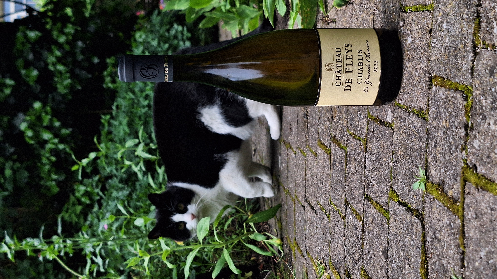
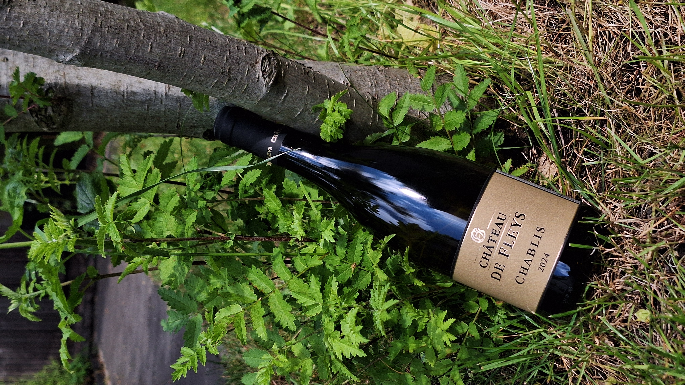
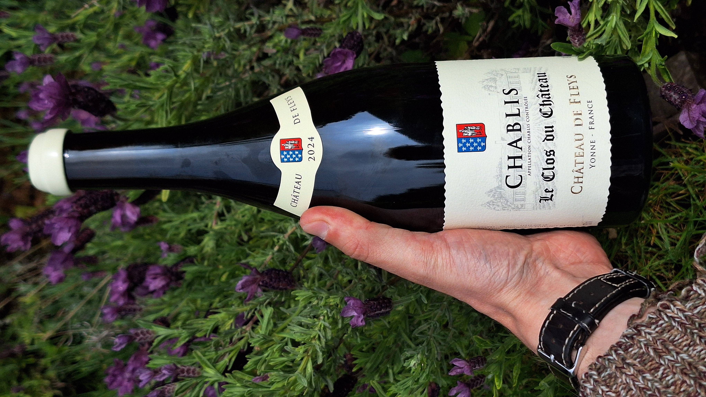
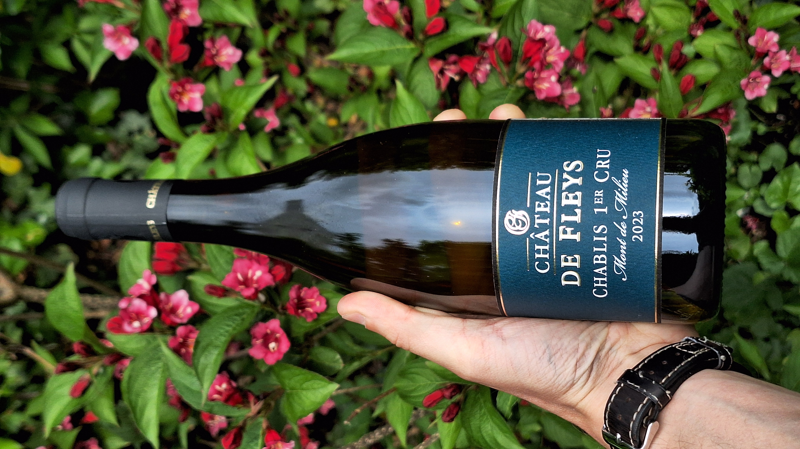
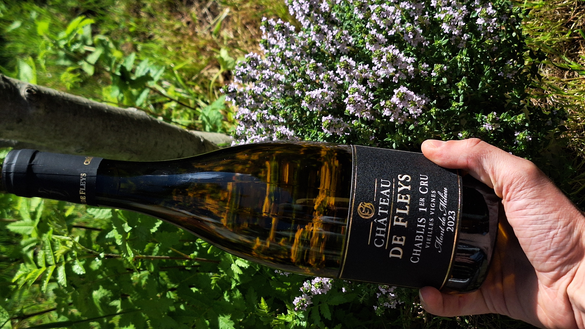

Chablis
Bourgogne — Chardonnay op kimmeridgien kalksteen. Voor meer informatie over Chablis, klik hier.
Wit

Château de Fleys
La Grand Chaume 2023
Château de Fleys
| Appellation | Chablis |
| Vintage | 2023 |
| Stijl | Fris, vol, Mineraal |
| Bodem | Kimmeridgien |
| Druivenras | Chardonnay |
| Aroma's | Citrus, boterig, minerale toetsen |
| Opvoeding | 30% eik/ 70%inox |
| Bewaarpotentieel | 5-7 jaar |
| Serveren | 10 - 12 °C |
| Alcohol | 13% |
| Prijs | €22 |
Deze Chablis, “La Grande Chaume”, is afkomstig van geselecteerde percelen nabij de premier cru “Les Fourneaux” op de rechteroever van de Serein, met een zuidwestelijke expositie op Kimmeridgien-bodem. De wijn is gemaakt van chardonnay die afkomstig is van wijnstokken die ongeveer 40 jaar oud zijn en een rendement van 50 hl/ha hebben. De vinificatie bestaat uit een volledige malolactische gisting en ongeveer 30% van de wijn rijpt op Bourgondische eikenvaten van 1, 2 en 3 jaar oud, terwijl 70% op inox wordt opgevoed. In de neus vinden we wit fruit en florale tonen, aangevuld met een lichte kruidigheid van hout en een subtiele botertoets. In de mond is de wijn tegelijk rond en vol, met aroma’s van rijp wit fruit, perzik en een toets van de mineraliteit die typisch is voor Chablis. De frisse zuren geven spanning en balans, waardoor het geheel elegant en levendig blijft. De afdronk is lang en mineraal, met een frisse citrusachtige finale. Ideaal als aperitief of bij fruits de mer en verfijnde visgerechten.
Klik of tik om meer te lezen ▴

Château de Fleys
Chablis 2024
Château de Fleys
| Appellation | Chablis |
| Vintage | 2024 |
| Stijl | Fris, Mineraal |
| Bodem | Kimmeridgien |
| Druivenras | Chardonnay |
| Aroma's | Citrus, floraal, minerale toetsen |
| Opvoeding | Inox |
| Bewaarpotentieel | 5 jaar |
| Serveren | 8 - 10 °C |
| Alcohol | 12,5% |
| Prijs | €21 |
Deze Chablis komt van wijngaarden op de rechteroever van de Serein met een westelijke expositie op Kimmeridgien-bodems. De stokken zijn gemiddeld 30 jaar oud, met een plantdichtheid van 550 wijnstokken per hectare en een rendement van 60 hl/ha. De oogst gebeurt machinaal en de vinificatie omvat een volledige malolactische gisting, gevolgd door opvoeding op fijne lies in inox tanks. In de neus komen florale toetsen van witte bloemen en lentebloesems naar voren, aangevuld met aroma’s van appel, perzik en citrus, met een lichte hint van brioche. In de mond is de wijn fris met subtiele rondeur in de aanzet die gecounterd wordt door levendige aciditeit. De afdronk is middellang en verfrissend met citrustonen en de mineraliteit die blijft hangen, wat deze wijn ideaal maakt als aperitief of bij fruits de mer en fijne visgerechten.
Klik of tik om meer te lezen ▴

Château de Fleys
Chablis Monopole 'Le Clos' 2024
Château de Fleys
| Appellation | Chablis |
| Vintage | 2024 |
| Stijl | Fris, Mineraal |
| Bodem | Kimmeridgien |
| Druivenras | Chardonnay |
| Aroma's | Citrus, rijp fruit, minerale toetsen |
| Opvoeding | 20% eik/ 80% inox |
| Bewaarpotentieel | 5-7 jaar |
| Serveren | 10 - 12 °C |
| Alcohol | 12,5% |
| Prijs | €27 |
Deze Chablis is afkomstig van een monopole-clos in het hart van het dorp Fleys, een wijngaard van ongeveer 1 hectare die volledig ommuurd ligt en grenst aan het château. Dankzij deze unieke ligging wordt hier een bijzondere cuvée geproduceerd, die door sommige wordt vergeleken met een premier cru. De oogst gebeurt volledig manueel om de kwaliteit van de druiven optimaal te bewaren. De vinificatie bestaat uit 80% rijping in inox tanks en 20% opvoeding op eiken vaten, wat zorgt voor een mooie balans tussen zuiverheid en complexiteit. In de neus vinden we aroma’s van rijp citrusfruit, tropisch fruit, florale toetsen en lichte rokerigheid op de achtergrond. In de mond is de wijn strak met een levendige frisheid, tegelijkertijd met een rondeur over de middenmond die zorgt voor elegantie. De afdronk is lang en mineraal met frisse citrusaccenten. Ideaal als aperitief of bij fruits de mer en fijne visgerechten.
Klik of tik om meer te lezen ▴

Château de Fleys
Chablis Premières Crus Mont des Milieux 2023
Château de Fleys
| Appellation | Chablis |
| Vintage | 2023 |
| Stijl | Vol, kruidig, mineraal |
| Bodem | Kimmeridgien |
| Druivenras | Chardonnay |
| Aroma's | Citrus, kruiden, minerale toetsen |
| Opvoeding | inox |
| Bewaarpotentieel | 10 jaar |
| Serveren | 10 - 12 °C |
| Alcohol | 13,5% |
| Prijs | €31,5 |
Deze Chablis 1er Cru “Mont de Milieu” is gelegen op de rechteroever van de Serein en profiteert van een zuidelijke expositie op Kimmeridgien-bodem. De wijngaarden zijn gemiddeld 50 jaar oud en beslaan ongeveer 5 hectare met een plantdichtheid van 5500 stokken per hectare en een rendement van 50 hl/ha. De oogst gebeurt manueel waarbij de meest gezonde druiven zorgvuldig geselecteerd worden. De wijn werd gemaakt met een volledige malolactische gisting en volledig opgevoed in inox cuves met een lange sur lie-rijping op fijne gisten, wat zorgt voor extra complexiteit en structuur. In de neus vinden we een combinatie van fris wit fruit met subtiele boterachtige, brioche- en licht rokerige toetsen. In de mond is de wijn vol en complex, met een mooie rondeur die in balans wordt gehouden door een duidelijke mineraliteit en frisse zuren. De afdronk is lang en elegant, met een frisse, krijtachtige spanning die typisch is voor Chablis. Dankzij zijn structuur en rijkdom past deze wijn uitstekend bij rijkere gerechten zoals gebraden kip of romige visgerechten, maar ook bij fruits de mer en fijne visgerechten.
Klik of tik om meer te lezen ▴

Château de Fleys
Première Cru Mont de Milieu Vieilles Vignes 2023/2024
Château de Fleys
| Appellation | Chablis |
| Vintage | 2023 (of 2024) |
| Stijl | Rijp, vol & Mineraal |
| Bodem | Kimmeridgien |
| Druivenras | Chardonnay |
| Aroma's | Rijp fruit, kruidig, minerale toetsen |
| Opvoeding | 30% eik/ 70 inox |
| Bewaarpotentieel | 10-12 jaar |
| Serveren | 10 - 12 °C |
| Alcohol | 13,5% |
| Prijs | €34 |
Deze wijn is afkomstig van een prestigieuze perceel op de rechteroever van de Serein met een zuidelijke expositie, bekend om zijn uitgesproken mineraliteit. De “Vieilles Vignes” zijn meer dan 85 jaar oud en leveren een bijzonder geconcentreerd en complex sap op. De oogst gebeurt manueel om de kwaliteit van deze oude stokken volledig te respecteren en dus enkel de beste druiven te selecteren. De wijn rijpt 16 tot 18 maanden, waarvan 70% in inoxcuves en 30% op eiken vaten. Dit zorgt voor een mooie balans tussen frisheid, structuur en subtiele houtinvloed. In de neus vinden we citrus, rijp wit fruit, duidelijke kruidige houttoets en boteraroma. In de mond is de wijn rond en vol, met levendige zuren die de wijn mooi in balans houden en het gastronomisch karakter ervan benadrukken. De afdronk blijft fris en mineraal en subtiel kruidig houttoets.
Klik of tik om meer te lezen ▴